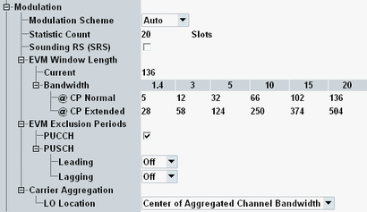

The following "Measurement Control" parameters configure the modulation measurement settings.

Selects one of the three possible modulation schemes (QPSK, 16-QAM, 64-QAM) for LTE uplink signals. The R&S CMW can also auto-detect the modulation scheme (setting: "Auto").
Auto-detection can fail for signals with a poor modulation accuracy. In this case, select the modulation scheme in accordance with the measured signal.
For remote operation, it is recommended to select the modulation scheme manually to ensure correct detection and speed up the measurement. The reset value differs from the preset value.
Remote command:Defines the number of measurement intervals per measurement cycle for modulation measurements. The following result views use this statistic count: EVM, magnitude error, phase error, inband emissions, equalizer spectrum flatness, I/Q diagram and TX measurement.
One measurement interval is completed when the R&S CMW has measured a full slot of the configured "Measure Subframe". The measurement always extends over the whole subcarrier range.
The measurement provides independent statistic counts for different results. In single-shot mode, a measurement with a completed statistic count is stopped, even if another measurement with an incomplete statistic count is still running.
Remote command:Indicates whether the uplink signal can contain a sounding reference signal (SRS) or not.
- Disabled: The uplink signal must not contain an SRS. Otherwise the modulation results are distorted.
- Enabled: The uplink signal can contain an SRS in the last SC-FDMA symbol of a subframe.
This SC-FDMA symbol is analyzed to derive an EVM result for SRS (EVM SRS). For all other modulation results, the SC-FDMA symbol is not evaluated.
SRS is not allowed for eMTC.
In the standalone (SA) scenario, this parameter is controlled by the measurement. In the combined signal path (CSP) scenario, this parameter is set by the signaling application. A subsequent modification in the signaling application is also applied to the measurement. But changing the setting in the measurement does not affect the signaling application.
Remote command:Length of the EVM window, defined in samples. The standard (3GPP TS 36.101, annex F) specifies the window length as a function of the bandwidth and the cyclic prefix. The R&S CMW uses the "Current" value. This value is linked to the value in the table, corresponding to the current cyclic prefix and bandwidth settings.
The window length defines the two sets of "l / h" modulation quantities in the result tables; see "Calculation of Modulation Results".
The minimum value of one FFT symbol means that EVMh equals EVMl.
Remote command:Exclusion periods to be considered for calculation of EVM, magnitude error and phase error results (quantities with "low" and "high" values).
- PUCCH: This parameter affects low and high single value results (tables below bar graphs). If the parameter is enabled, the first and the last SC-FDMA symbol of each slot is excluded from the calculation of these results. If the last symbol of a slot is already excluded because SRS signals are allowed, the second but last symbol is also excluded.
- PUSCH: This parameter affects all low and high results (single values and bar graphs). The selected time intervals are excluded from the calculation of these results.
The "Leading" time interval is excluded at the beginning of each subframe.
The "Lagging" time interval is excluded at the end of each subframe; if SRS signals are allowed, at the end of each shortened subframe.
The "Carrier Aggregation" node is only visible for carrier aggregation measurements, see "Carrier Aggregation Mode".
Selects the local oscillator (LO) location for carrier aggregation.
- "Center of Aggregated Channel Bandwidth":
The transmitter uses a single local oscillator (LO). The LO frequency is the center frequency of the aggregated channel bandwidth. - "Center of each Component Carrier":
The transmitter uses a separate LO for each component carrier. The LO frequencies are the center frequencies of the component carriers.
The setting influences the measured I/Q offset and the inband emission mask. The mask depends on the location of the RF carriers ("IQ Offset" component) and on the location of the image frequencies ("IQ Image" component), see also "Inband Emissions Limits".
Remote command:Selects the local oscillator (LO) location for eMTC. The setting is hidden if eMTC is disabled.
- "Center of Narrowband":
The LO frequency of the transmitter is in the center of the narrowband. - "Center of Channel Bandwidth":
The LO frequency of the transmitter is in the center of the cell bandwidth.
The setting influences the measured I/Q offset and the inband emission mask. The mask depends on the location of the RF carrier ("IQ Offset" component) and on the location of the image frequencies ("IQ Image" component), see also "Inband Emissions Limits".
Remote command: